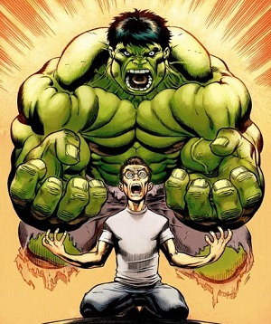

Hulk¶
| Alter Ego | Robert Bruce Banner |
| Abilities as Hulk |
|
| Abilities as Bruce |
|
| Arch-Nemisis | Abomination |
| Popular Enemies |
|
Backstory:
Bruce Banner was born to an alcoholic father and a loving mother. As a young boy, Banner’s father showed a deep hatred for his son, and the love of his mother just seemed to fuel his rage. His father was an atomic physicist who worked on producing clean nuclear power as an energy source. However, he was afraid that his exposure to the radiation had mutated his son’s genes. Bruce showed early signs of a high intelligence, which solidifed his father’s beliefs. He soon started abusing Bruce and when his mother tried to intervene, he killed her.
As a young boy, Bruce was very withdrawn, and possibly developed a split personality to deal with his pain and rage. He had a very hard time making friends and often fell victim to the bullies at school. One of these incidents led him to plant a bomb in the basement of the school, which ended up being a dud. This got him expelled from the school, but the military realized his genius and after gaining his doctorate degree in nuclear physics, he quickly gained a job with them.
While supervising the testing of an experimental gamma bomb that he helped create for the US Department of Defense, Bruce came to the rescue of an ignorant teenager that had wandered onto the testing field. Bruce saved the teen by pushing him into a nearby ditch, but he recieved the full blast from the bomb. He somehow survived, but was extremely irradiated from the bomb, which is what began his tranformation.
At first, he would just tranform into the Hulk at sunset, and turn back into himself at dawn. As time passed, his transformation became triggered by a large release of adrenaline rather than the time of day. When he turns into the Hulk, he retains little to none of his human counterpart’s memory and intelligence, which can make him a menace to anyone who angers him.